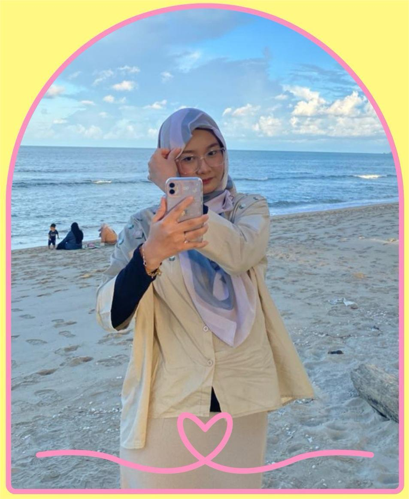

ARIFAH ZULAIKHA MALEK
Welcome to my little pastel space on the internet! I’m so glad you decided to stop by. This website is a sweet, cozy collection of everything that makes up my world—my inspirations, my experiences, my dreams, and all the tiny moments that bring joy into my life. I created this space with the hope that it feels soft, cheerful, and full of good vibes, just like a digital scrapbook made with love. As you explore, you’ll find pieces of my journey, the things I’m passionate about, and the memories that continue to shape who I am. Every page reflects a part of me, from my personality to the things I enjoy creating and learning. From little smiles to big dreams, I hope every visitor can feel the positive vibes I try to spread—like the soft morning sunlight or the comforting aroma of a weekend cup of coffee. Let’s explore a world that’s cute, aesthetic, and full of inspiration together—one click, one smile, and one happy moment at a time. Thank you so much for visiting and taking the time to get to know me—your presence truly makes this space feel even warmer and more special!